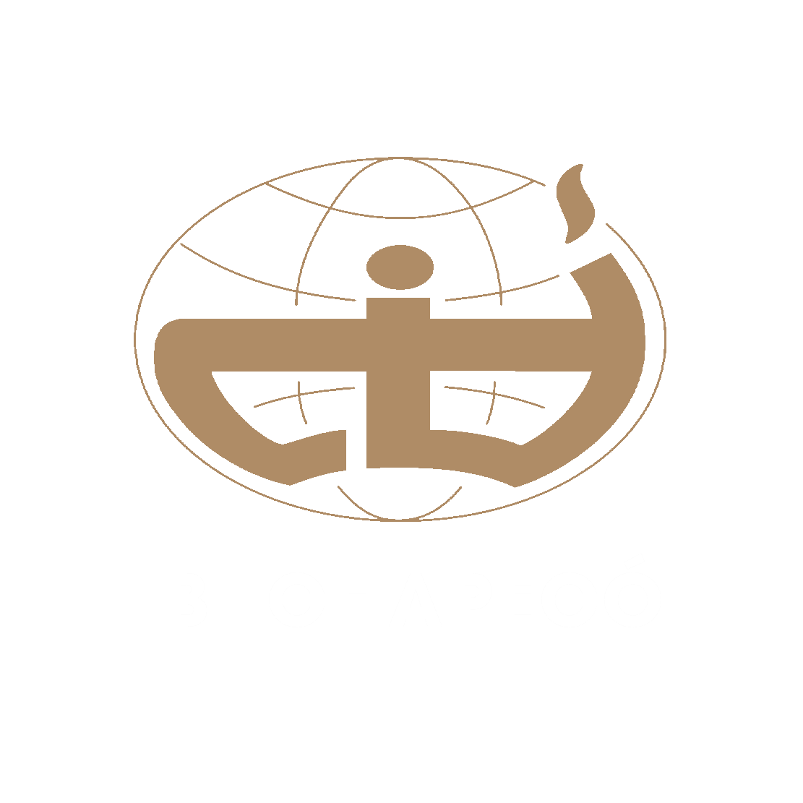

Quadro Tito
Um espaço para compartilhar ensinamentos, encorajamentos, inspirações e motivações ao missionarios, para fortalece-los no campo e mostrar que estamos com eles.

Um espaço para compartilhar ensinamentos, encorajamentos, inspirações e motivações ao missionarios, para fortalece-los no campo e mostrar que estamos com eles.